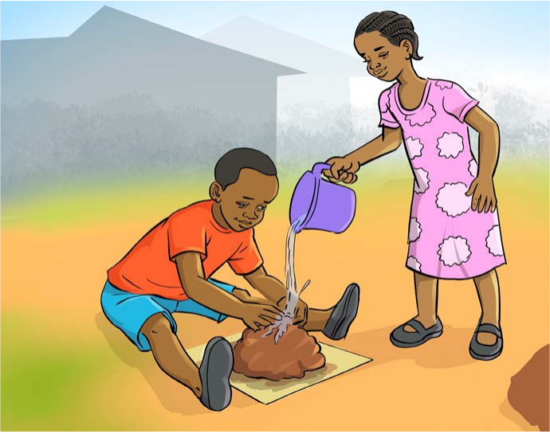

Tufinyange vitu mbalimbali
Tufinyange vitu mbalimbali.
Vifaa
Jedwali linaonesha rundo la udongo wa mfinyanzi, ndoo ya maji na kitako cha umbo.

Mvulana ameketi akishika udongo juu ya kitako cha umbo, huku msichana akimimina maji kutoka kwenye ndoo ndogo ili kulowesha udongo.
Zoezi la 2
Zoezi la pili
29